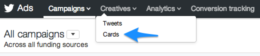
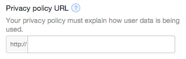

Where do you collect email addresses?
Not how, but where?
On your website and blog, right? Of course, but now there is a new place to collect email addresses: Twitter.
Twitter has been allowing users to advertise on its platform for a while now, but lead generation cards are relatively new. Twitter explains:
What are Lead Generation Cards?
The Lead Generation Card makes it easy for people to express interest in what your business offers – they can seamlessly and securely share their email address without leaving Twitter or having to fill out a cumbersome form.
How do Lead Generation Cards work?
When someone expands your Tweet, they’ll see a description of the offer and a call to action. Their name, @username and email address (which they have previously entered in their Twitter settings) are already pre-filled within the Card. With a simple click of a button, the user can send this information directly to you.
How cool is that? A Twitter user can give you their email address (in exchange for something of value) without typing a single character. Marketers are always trying to eliminate friction and this is one of the coolest and most useful friction-reducers we’ve ever seen. In a single click, you can capture:
- Name
- Twitter username
- Email address
So how can you get started for yourself? First, let’s take a look at what you’ll need:
- A Twitter Ads account: You already have one. Just go to ads.twitter.com and sign in with your normal Twitter username and password.
- Something valuable to give away: No one is giving away their email address for free. Be prepared to offer a book, guide, webinar, course or something else valuable.
- A privacy policy: Because there is an exchange of sensitive contact data, you must show Twitter and Twitter users how that data will be handled.
- A credit card: Nothing is free. In fact, Twitter won’t even let you go through the steps of creating a lead generation card without a valid credit card.
Ready to get started? Head to ads.twitter.com and login.
How to create lead generation Twitter Cards
Click “Creatives,” then “Cards.”

Next, click “Create Lead Generation card.”
There are a number of fields you need to fill out before you can make your lead generation card live. We’ll tackle each one individually to make sure you understand what is required and, more importantly, what is going to drive the most conversions.
Short description
You only have 50 characters to make to grab a Twitter users’ attention and convince them to convert. It’s no small task, and we recommend testing different descriptions to see what drives the most leads.
We are currently promoting our 14-day email marketing course with the description “14 Days to Better Email and More Business.”
Card image
Next up is the image. Again, space is limited so try to avoid filling it with useless information. A logo, for example, might take up too much room so try using some persuasive copy with your brand’s colors and fonts.
There are some pretty strict formatting rules so pay close attention. Images must be at least 600px x 15opx and maintain a 4:1 aspect ratio. If you aren’t a designer, I recommend heading to Canva.com and spending five minutes creating a beautiful image to go with your lead generation card.
Tip: Don’t use their templates. Click “Use Custom Dimensions” and enter 600px by 150px.
Here’s one I created in just a few minutes:

Images drive conversions. Spend time to get it right.
Call to action
The entire Twitter card is essentially a call to action but in the official call to action field you only get 20 characters. The key here is to avoid friction words “Sign up” and “Give.” Words like imply commitment. Remember, this is Twitter, not your website. You haven’t had the chance to earn their trust yet, so you need to be very careful with your copy here.
Try something committal and soothing, like “Learn more” or something that implies value, like “Get the guide.”
Privacy policy URL

This is required. If you are a SaaS business, you likely already have a privacy policy. If you don’t, it’s a good idea to have one anyway. No way around this one.
Card Details (Fallback) URL
Not everyone using Twitter is using a supported platform like Twitter.com and the official mobile apps. This link should take users to a landing page for the same offer you have using in the card, just in case the user is on a non-supported platform.
Destination URL settings
This section is optional but highly recommended. It controls what users see after they submit their information.
The “Destination URL” is equivalent to a “Thank You” or “Download” page. Make sure you fill this out with something that will be a positive representation of your brand and useful to your new lead. A link to your homepage, for example, isn’t that helpful.
If you are offering an e-book, you could send users to a download page. Or, if you are preparing for a webinar, you could send them an archive of old webinars to get familiar with your brand and expertise.
The “Post-submit message” could be as simple as “Thanks for signing up” or “Check your email for your first lesson!” You only have 100 characters so keep it short and sweet.
Data settings
The section deals with how your leads are handled once the user submits their data. You can use this section to connect Twitter’s API directly to your database. If you are using Vero, just let us know and we can help you do this.
If you aren’t tech-savvy, fear not. You can skip this section and download the data from the Twitter Ads platform at any time.
What would you like to name your card?
This is for internal use only, so just pick a name you will remember.
Once you create your card, you have the ability to preview it. From the Cards manager page (where you can see all of your cards), click the name of the card you want to preview.
On the next screen, click the “View at” link to see a preview.
Here is what ours looks like: https://cards.twitter.com/cards/18ce53vaqd9/s7z
How to use lead generation cards in real tweets
There are a few ways to send your card in real tweets. For starters, you can simply tweet it to your followers. This is free and a great way to test your copy, images and call to action. It’s also a good idea to test it with someone you know, like a co-worker, to make sure it’s working properly.
To do this, simply click “Compose Tweet with this card.” You will see this screen:
Type a tweet as you normally would. You can include images, hashtags and other links but be sure to leave the cards.twitter.com link to include the card. Click “Tweet” and you are ready to start collecting new leads.
Our 14-day email marketing course has all the info you need to *kill it* with email https://t.co/SJJSvS0ywU — Chris Hexton (@chexton) June 13, 2014
Note: These does not work well for embedded tweets. Click here to see the real tweet.
Perhaps even more exciting is that you can use Twitter Ads’ campaign feature to target users that don’t follow you. It allows you to refine a group of Twitter users with incredible accuracy. For example, you can target users who:
- Watch certain TV shows
- Follow your competitors
- Tweet about specific topics
- Live near you
If you have a list of cold emails, you can actually upload them to Twitter ads and use this as a way to warm them up to your brand. You can even use retargeting to put your tweets in front of people who have visited your website.
Twitter Ads campaigns are powerful and complex. Rather than dive into that here, check out business.twitter.com for tons of information.
As we gather more data about how effective this lead generation method is, we’ll be sure to post it. Have you used Twitter to collect email addresses? Let us know in the comments.